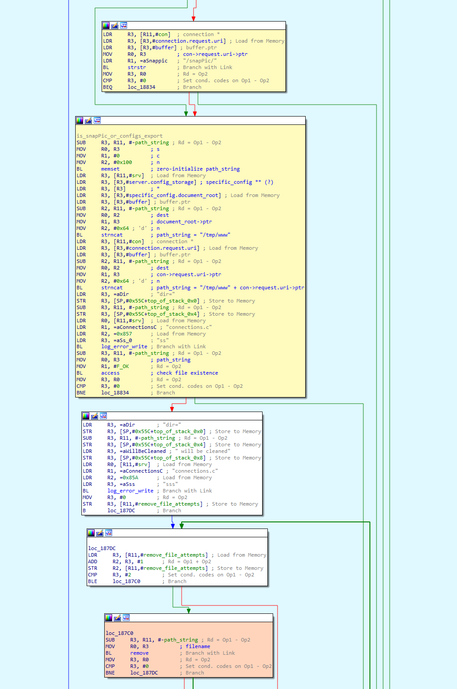
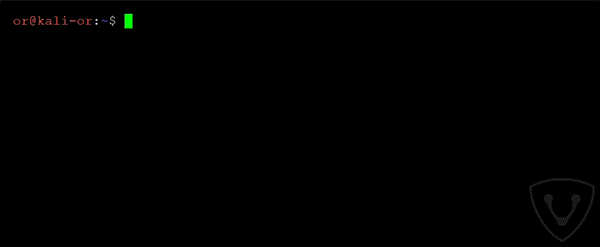
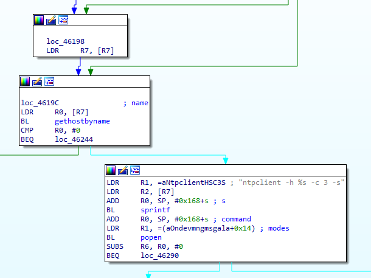
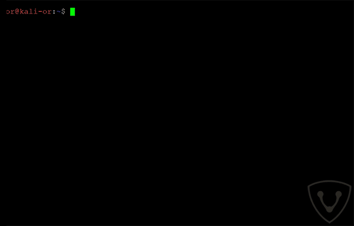
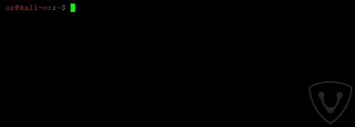
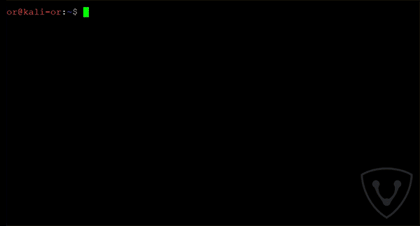
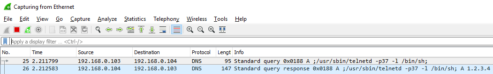

Foscan 摄像头多个漏洞披露含技术细节
在过去的几个月里，VDDO 安全研究团队一直在物联网安防领域进行广泛的安全研究。在大多数情况下，为了提高效率和透明度，研究是和设备供应商一起进行的。
作为研究的一部分，VDOO 研究团队发现了多个供应商的设备中发现了 0day 漏洞。根据漏洞披露原则，这些漏洞首先向厂商披露，随后会逐步公开。
我们发现 Foscan 是最易受到攻击之一的厂商，我们团队在 Foscan 安全摄像头中发现了一条关键的漏洞链。结合我们发现的这几个漏洞，如果一个攻击者获取到了摄像头的地址，他能够远程获取 root 权限(局域网或互联网)。VDOO 负责的披露这些漏洞（CVE-2018-6830、CVE-2018-6831、CVE-2018-6832）,并与 Focsam 安全团队合作修复这些漏洞。
据我们所知，这些漏洞并没有在野利用，因此不会对Foscam客户造成任何具体的隐私侵犯或安全威胁。Foscam 团队迅速采取行动，修补这些漏洞，并将其推送到脆弱的产品中。
技术概要
摄像头采用了 Linux 操作系统，所有的程序均以 root 权限运行。web 服务器是厂商做了修改的 lighttpd,它使用 FastCGI 协议将 API 请求转发到内部的 CGIPorxy.fcgi 程序。随后 CGIProxy.fcgi 将请求转发(使用专有的 IPC 机制)给 webservice。在这里会验证用户的凭证（如果需要）并运行 API 命令的处理程序。根据命令不同，处理程序可能会从 devMng 调用额外的代码，通常会使用 system() 或 popen() 库调用来执行 shell 命令，用于配置系统服务。watchdog 守护进程会重新启动哪些被终止了的重要的进程。
攻击场景如下：
第一步：首先必须获取到摄像头的 IP 地址和 DNS。这可以通过以下几种方式获取
- 如果摄像头和网络是用户自行配置的，比如摄像头与互联网直联，那么它的地址可能使用一些扫描器获取。
- 如果攻击者通过未授权（远程或本地）的方式访问摄像头的网络，他可能能够找到摄像头的本地地址。
- 如果用户启用了动态 DNS，攻击者可能会找到方法解析出设备名称。
第二步：攻击者使用任意文件删除漏洞（CVE-2018-6830）删除某些重要的文件。当 webservice 进程重启时，这些文件将导致身份验证被绕过。
第三步:攻击者使用 webService 进程中的一个堆栈溢出漏洞(CVE-2018-6832) 使 webService 进程崩溃。在webService 奔溃后，守护进程会自动重启 webServie 进程。在进程 reload 期间，第二步的操作会生效。现在，攻击者就能够获取管理员凭证了。
第四步：利用命令注入漏洞（CVE-2018-6831）以 root 权限执行命令，这一步需要管理员的凭证。在上面一步中已经获取到了管理员的凭证，因此攻击者就能以 root 权限执行命令。技术详细如下。
技术深潜
本节提供每个漏洞的细节，并解释完整的攻击序列。
CVE-2018-6830 任意文件删除漏洞
此漏洞允许攻击者删除摄像头文件系统中的任意文件，只需要发送一个特定的 GET 请求到摄像头的 Web 管理接口。在这个请求中不需要用户的凭证。
问题出在厂商在开源 web 服务器 lighttpd 中添加的代码中。这段代码的功能是使用 snapPicture API 命令删除从摄像头发送到用户的临时快照照片(exportConfig API 中也有相同的功能)。
当一个 GET 请求被发送到 web 服务器（通过 88 端口），在请求处理之后，会在 URI 路径组件（con->request.uri->ptr）中搜索字符串 /config/export 或 snapPic。如果请求中包含这两个字符串中的任何一个，服务器会使用 strncat 函数将文档根路径 /tmp/www 与 URL 路径组件组合起来，形成完整的路径。然后会判断文件是否存在(通过调用 access(path,F_OK)),如果存在将调用 remove(path) 函数删除这个文件。

这段代码有一个路径遍历漏洞。攻击者可以在 GET 请求中用使用 ../，这会终止 con->request.uri->ptr 组件。由于 /snapPic/ 已经存在 web 服务目录下，攻击者可以使用包含 /snapPic/ URI 作为有效路径，这也将触发代码的分支执行。攻击者接着添加 ../ 向上遍历到根目录（‘/’）,然后添加要删除的文件路径。例如，URI /snapPic/../../../tmp/abc 意味着 /tmp/abc,如果文件存在，则删除。
POC
这个 POC 用来展示如何使用这个漏洞删除设备上的任意文件。
shell 变量 _FILE_TO_DELETE shell 保存在需要删除的文件的绝对路径。

CVE-2018-6832 基于堆栈的缓冲器
这个漏洞允许攻击者击溃 WebService 进程。触发这个漏洞只需要发送一个特定的 GET 请求到摄像头的 Web 管理接口，同样不需要用户凭证。
摄像头的 Web 服务提供一个含有很多命令的 FastCGI API。其中的一个命令 getSWFlag 通过发送一个未授权的 HTTP GET 请求到 /CGIProxy.fcgi?cmd=getSWFlag 来调用。GET 请求的参数从 CGIProxy.fcgi 转发到 webService 的 getSWFlag 函数（让我们称它为 GetSWFlag_func）。GetSWFlag_func 可以选择接收名为 callbackJson 的查询字符串参数。
getSWFlag_func 首先将 callbackJson 参数的值读入堆栈上大小为 0x400 字节的局部变量 callbackJson_var。这是通过调用 get_param 函数并引用 callbackJson_var 来实现的，其大小限制为 0x400 个字符。
之后，getSWFlag 调用引用了 callbackJson_var 的 prepare_reply_func 函数。这个函数会准备一些将发送回用户的 HTTP 响应。
如果 callbackJson_var 不为空，prepare_reply_func 使用 strcat 将一些字符串附加到 callbackJson_var 字符串的适当位置（在 getSWFlag_func 堆栈上的原始位置）。大约会添加 0x48 个字符（添加的字符串是：'({“key”:”<CGI_Result><result>0</result><flag>0011</flag></CGI_Result>”})’)）。
因此，如果攻击者设置查询的字符串的参数 callbackJson 的值可以容纳多个字符（超过某个阈值），而 prepare_reply_func 生成的结果将导致 getSWFlag_func 堆栈中的 callbackJson_var 溢出。编写大量字节将导致重写已保存的堆栈寄存器(包括PC寄存器)并导致程序崩溃。因此，攻击者可以破坏 webService 进程，这将导致在几秒后由 /usr/bin/watchdog 进程重新启动这个进程。
CVE-2018-6831 shell 命令注入漏洞
利用这个漏洞需要用到前几个阶段获取到的管理员凭证，攻击者可以以 root 权限执行命令。它绕过了 Cisco Talos 在 2017 年 6 月披露的漏洞 CVE-2017-2879 的补丁。

摄像头的 Web 服务器 FastCGI API 包含一个自定义 NTP 服务器的命令（/CGIProxy.fcgi?cmd=setSystemTime）。执行这个命令需要管理员权限。这个命令需要的参数 ntpServer 用于设置 NTP_Server_URL。该参数没有进行任何净化处理，甚至可以使用空格和分号。
当 API 命令 setSystemTime 被调用时，CGIProxy.fcgi 转发请求给 webService 进程，该进程读取其参数并发送一条 IPC 消息，此消息调用 devMng 函数的 OnDevMngMsgSetSystemTime(命令 0x6034)。
此外，OnDevMngMsgSetSystemTime 将新的 NTP_Server_URL 设置为全局结构体。
一个使用了 devMng 的独立的线程 NTP更新线程 ，每一秒运行一次 setSystemTimeNTP 并无限循环。
setSystemTimeNTP 从全局结构体中获取 NTP_Server_URL 的值（先前设置的），然后调用 gethostbyname(NTP_Server_URL) 函数使用。如果 hostname 被成功解析它会调用以下存在漏洞的代码：sprintf(buf, “ntpclient -h %s -c 3 -s”, NTP_Server_URL); 和 popen(buf, “r”);(见下面的 IDA 截图)。

popen 函数使用 sh -c 执行 shell 命令，而提供的字符串将作为参数。如果我们在设置 NTP_Server_URL 添加一些命令（SOME_COMMAND），可以绕过 gethostbyname(NTP_Server_URL) 而调用 popen ，并执行 ntpclient -h ;SOME_COMMAND; -c 3 -s。分号有助于突破 shell 命令，导致命令执行。因为 devMng 进程以 root 权限运行，于是我们就能够用以 root 的身份执行任意命令。
如前所示，我们认为 CVE-2017-2879 的补丁是，只有在成功的调用了 gethostbyname() 才会执行命令sh -c “ntpclient -h ;SOME_COMMAND; -c 3 -s。我们的推测是补丁作者假定使用 gethostbyname() 调用可以有效地净化 NTP_Server_URL 的输入。我们驳斥了这一假设，因为我们注意到 uclibc(摄像头的 C 标准库) gethostbyname() 的实现并没有解决 hostname 解析时， hostname 中包含分号或空格的问题。
为了绕过 gethostbyname 调用，我们执行以下几步（结合下图 “CVE-2018-6831 步骤” 中相应的步骤编号 ）。
- 我们配置了带有预定义静态 IP 地址（例如 1.2.3.4）一个 DNS 服务器，并使其响应所有的 DNS 查询（甚至包含分号和空格）。
- 然后，我们使用 /CGIProxy.fcgi?cmd=setIpInfo API 命令把摄像头的 DNS 地址设置为我们自己的 DNS 服务器。
- 然后，我们使用含有 ;SOME COMMAND; 的 NTP_Server_URL参数对 API 命令 setSystemTime发起恶意请求，从而触发此漏洞。
- 在这个阶段，gethostbyname 运行导致摄像头发送一个带有 ;SOME_COMMAND; 的 DNS 请求。
- 我们的 DNS 发送一个有效的响应，使 gethostbyname 调用成功。
- 命令注入成功，攻击者可以 root 权限执行任意命令。

POC
- 漏洞利用准备 - 按以下配置安装一个 Bind9 DNS 服务器
 - 把摄像头的 DNS 服务器设置我们的 DNS 服务器（使用管理员的用户名和密码）
 - 触发漏洞（我们选择执行 telnet 并连接它 ）

下图是 wireshark 的截图 —— 显示了整个攻击过程中发出的 DNS 流量。

表1 - 存在漏洞的最新固件版本
| 摄像头型号 | 固件版本号 |
|---|---|
| C1 Lite V3 | 2.82.2.33 |
| C1 V3 | 2.82.2.33 |
| FI9800P V3 | 2.84.2.33 |
| FI9803P V4 | 2.84.2.33 |
| FI9816P V3 | 2.81.2.33 |
| FI9821EP V2 | 2.81.2.33 |
| FI9821P V3 | 2.81.2.33 |
| FI9826P V3 | 2.81.2.33 |
| FI9831P V3 | 2.81.2.33 |
| FI9851P V3 | 2.84.2.33 |
| FI9853EP V2 | 2.84.2.33 |
| C1 | 2.52.2.47 |
| C1 V2 | 2.52.2.47 |
| C1 Lite | 2.52.2.47 |
| C1 Lite V2 | 2.52.2.47 |
| FI9800P | 2.54.2.47 |
| FI9800P V2 | 2.54.2.47 |
| FI9803P V2 | 2.54.2.47 |
| FI9803P V3 | 2.54.2.47 |
| FI9815P | 2.51.2.47 |
| FI9815P V2 | 2.51.2.47 |
| FI9816P | 2.51.2.47 |
| FI9816P V2 | 2.51.2.47 |
| FI9851P V2 | 2.54.2.47 |
| R2 | 2.71.1.59 |
| C2 | 2.72.1.59 |
| R4 | 2.71.1.59 |
| FI9900EP | 2.74.1.59 |
| FI9900P | 2.74.1.59 |
| FI9901EP | 2.74.1.59 |
| FI9961EP | 2.72.1.59 |
| FI9928P | 2.74.1.58 |
| FI9803EP | 2.22.2.31 |
| FI9803P | 2.24.2.31 |
| FI9853EP | 2.22.2.31 |
| FI9851P | 2.24.2.31 |
| FI9821P V2 | 2.21.2.31 |
| FI9826P V2 | 2.21.2.31 |
| FI9831P V2 | 2.21.2.31 |
| FI9821EP | 2.21.2.31 |
| FI9821W V2 | 2.11.1.120 |
| FI9818W V2 | 2.13.2.120 |
| FI9831W | 2.11.1.120 |
| FI9826W | 2.11.1.120 |
| FI9821P | 2.11.1.120 |
| FI9831P | 2.11.1.120 |
| FI9826P | 2.11.1.120 |
| FI9805W | 2.14.1.120 |
| FI9804W | 2.14.1.120 |
| FI9804P | 2.14.1.120 |
| FI9805E | 2.14.1.120 |
| FI9805P | 2.14.1.120 |
| FI9828P | 2.13.1.120 |
| FI9828W | 2.13.1.120 |
| FI9828P V2 | 2.11.1.133 |